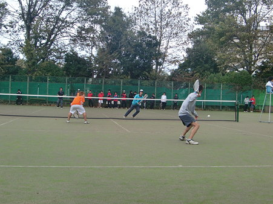

-
About
 法政大学工体連ソフトテニス部の大会結果です。
ここ最近の大会結果を載せています。
ちなみに関東理工科系ソフトテニス連盟 の男子1部リーグに所属しています。
2011年～2012年度に男子1部リーグで3連覇中を果たしました
-
2011年度秋理工系(6/12) [1部優勝]
-
vs慶應義塾大学[③-2]
１、 佐藤・荒谷 ⑤－2 前沢・服部
２、 藤村・竹内 ⑤－1 入江・保里
３、 高橋・岡村 ３－⑤ 加藤・喜古
４、 野谷・竹田 ３－⑤ 土元・今給黎
５、 伊東・西埜 ⑤－1 増尾・遠藤 -
vs芝浦工業大学[2-③]
１、 高橋・岡村 4－⑤ 寺崎・斎藤
２、 藤村・竹内 3－⑤ 多田・水内
３、 佐藤・荒谷 1－⑤ 深堀・田崎
４、 野谷・竹田 ⑤－1 中島・湯沢
５、 伊東・西埜 ⑤－0 三野輪・細屋 -
vs早稲田大学[③-2]
１、 佐藤・荒谷 2－⑤ 吉野・小川
２、 高橋・岡村 ⑤－2 江口・川端
３、 藤村・竹内 ⑤－4 萩野・久々宇
４、 野谷・竹田 2－⑤ 富手・清水
５、 伊東・西埜 ⑤－0 鈴木・佐藤 -
vs東京工業大学[③-2]
１、 佐藤・荒谷 1－⑤ 小川・野澤
２、 高橋・岡村 ⑤－1 西岡・服部
３、 藤村・竹内 2－⑤ 岡野・中田
４、 野谷・竹田 ⑤－1 貞本・宮野
５、 伊東・西埜 ⑤－1 松本・野田 -
vs東京都市大学[③-2]
１、 佐藤・荒谷 1－⑤ 矢代・岡田
２、 高橋・岡村 ⑤－2 吉川・阿部
３、 藤村・竹内 3－⑤ 加藤(大)・河口
４、 野谷・竹田 ⑤－3 長井・熊倉
５、 伊東・西埜 ⑤－4 唐沢・草野 -
個人戦
Best16
高橋・西埜
伊東・岡村
藤村・竹内
野谷・竹田
本間・三川
-
-
2011年度春理工系(6/12) [1部優勝]
-
vs千葉大学[④-1]
１、 佐藤・荒谷 ⑤－4 榊・篠崎
２、 藤村・竹内 ⑤－1 石川・郡司
３、 伊東・西埜 ⑤－3 安田・保角
４、 野谷・竹田 ⑤－2 吉丸・藤田
５、 久保・岡村 0－⑤ 山田・石川 -
vs早稲田大学[③-2]
１、 佐藤・荒谷 3－⑤ 川端・小川
２、 藤村・竹内 ⑤－4 富手・清水
３、 伊東・西埜 ⑤－1 江口・荒木
４、 野谷・竹田 4－⑤ 荻野・福本
５、 高橋・岡村 ⑤－0 鈴木・佐藤 -
vs芝浦工業大学[④-1]
１、 佐藤・荒谷 ⑤－1 三野輪・田中
２、 藤村・竹内 ⑤－0 水内・守谷
３、 伊東・西埜 ⑤－2 深堀・斉藤
４、 野谷・竹田 0－⑤ 多田・鈴木
５、 高橋・岡村 ⑤－0 寺崎・田崎 -
vs東京都市大学[③-2]
１、 藤村・竹内 ４－⑤ 矢代・岡田
２、 佐藤・荒谷 ⑤－1 山口・小ノ澤
３、 伊東・西埜 ⑤－1 唐沢・天野
４、 野谷・竹田 ⑤－0 中川・河口
５、 高橋・岡村 2－⑤ 長井・熊倉 -
vs東京工業大学[③-2]
１、 伊東・西埜 4－⑤ 小川・野澤
２、 佐藤・荒谷 ⑤－4 西岡・山下
３、 藤村・竹内 ⑤－4 岡野・宮野
４、 野谷・竹田 ⑤－4 貞本・横溝
５、 高橋・岡村 1－⑤ 松本・野田
-
-
2010年度秋理工系(11/6,11/7) [1部優勝]
-
vs芝浦工業大学[③-2]
１、 佐藤・西埜 2－⑤ 深堀・関崎
２、 藤村・竹内 ⑤－2 寺崎・細谷
３、 高橋・荒谷 ⑤－3 安藤・斎藤
４、 野谷・竹田 ⑤－1 三野輪・鈴木
５、 伊藤・岡村 2－⑤ 橘木・徳永 -
vs東京工業大学[④-1]
１、 佐藤・荒谷 2－⑤ 荒木・後藤
２、 藤村・竹内 ⑤－1 佐々木・山下
３、 伊藤・西埜 ⑤－2 松本・辻
４、 野谷・竹田 ⑤－3 貞本・野田
５、 高橋・岡村 ⑤－1 小川・野澤 -
vs早稲田大学[⑤-0]
１、 佐藤・荒谷 ⑤－3 吉野・荒木
２、 藤村・竹内 ⑤－1 鈴木・松田
３、 伊藤・西埜 ⑤－1 澤根・清水
４、 野谷・竹田 ⑤－4 富手・小川
５、 高橋・岡村 ⑤－2 江口・佐藤 -
vs千葉大学[④-1]
１、 佐藤・荒谷 3－⑤ 川崎・郡司
２、 藤村・竹内 ⑤－0 槙田・石川
３、 伊藤・西埜 ⑤－0 石川・篠崎
４、 野谷・竹田 ⑤－1 木村・庭田
５、 高橋・岡村 ⑤－0 安田・阿部 -
vs東京都市大学[③-2]
１、 佐藤・荒谷 4－⑤ 唐澤・熊倉
２、 藤村・竹内 ⑤－3 山口・岡田
３、 伊藤・西埜 ⑤－2 矢代・五十嵐
４、 野谷・竹田 ⑤－3 長井・小ノ澤
５、 高橋・岡村 2－⑤ 加藤・岩本
-
-
2010年度春理工系(5/29,5/30) [1部2位]
準備中・・・ -
2009年度秋理工系(11/7,11/8) [1部2位]
-
vs東京工業大学
１、 伊藤・佐久間 ２－⑤ 荒木・近藤
２、 浜田・岡村 ⑤－３ 貞本・辻
３、 亀山・山田 ⑤－４ 松本・後藤
４、 平田・竹内 ３－⑤ 木谷・野田
５、 高橋・西埜 ０－⑤ 小川・野澤 -
vs日本工業大学
１、 伊藤・佐久間 ⑤－４ 坂場・上條
２、 浜田・岡村 ⑤－２ 利相田・深山
３、 亀山・山田 ⑤－２ 永井・佐々木
４、 平田・竹内 ４－⑤ 高橋・島村
５、 高橋・西埜 ⑤－０ 町田・網野 -
vs芝浦工業大学
１、 平田・竹内 ⑤－０ 深堀・細谷
２、 高橋・西埜 ⑤－２ 加藤・関崎
３、 亀山・山田 ⑤－２ 寺崎・斉藤
４、 浜田・岡村 ⑤－１ 西出・高橋
５、 伊藤・佐久間⑤－３ 中島・膳 -
vs早稲田大学
１、 平田・竹内 ⑤－１ 吉野・保坂
２、 高橋・西埜 ⑤－１ 澤根・清水
３、 亀山・山田 ３－⑤ 江口・長島
４、 浜田・岡村 ⑤－１ 鷹鳥・荒木
５、 伊藤・佐久間⑤－３ 富手・高野 -
vs東京都市大学
１、 平田・竹内 ２－⑤ 岩村・稲沢
２、 高橋・西埜 ⑤－１ 加藤・五十嵐
３、 亀山・山田 ⑤－４ 早瀬・小林
４、 浜田・岡村 ⑤－２ 山田・岡田
５、 伊藤・佐久間４－⑤ 長井・鈴木
-
-
2009年度春理工系 [1部優勝]
準備中・・・